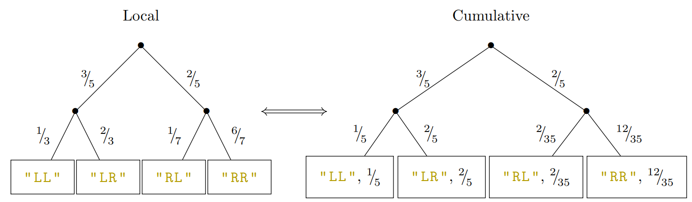

Kaz
 Maths
Maths
|
 Functional Programming
Functional Programming
|
 Puzzles
Puzzles
|
 Mario Hacking
Mario Hacking
|
 Misc
Misc
|
|---|
Besides being a math major, I also am interested in functional programming and programming language theory. I have been a teacher assistant for 15-150, principles of functional programming, eight times! (And I was a head TA once, which taught me just how difficult and rewarding it is to be a leader.)
During my time I've come up with lots of interesting problems, so I'll share my favorite contributions here.
Probability Trees (Joint effort with Brandon (old), Aileen, George, and Thea)
It's a cool idea to model probability trees in a programming language. There's local probability trees, where each node tells the probabilities of getting to each of the node's children. It's easy to add events to such a probability tree, but difficult to find the probability of an outcome.
On the other hand, there are cumulative probability trees, where each node tells the probability of getting to that node from the root. Here it's easy to find the probability of an outcome, but adding an event would require reweighting all the nodes' values!
We wrote a problem that explores these differences, while allowing students to practice with datatypes in Standard ML. It was also my first time writing a full-fledged autograder, which was fun but also extremely demanding. Thea rescued me at the end to fix all my bugs.
Staging
One motivation of higher order functions is the ability to stage computation.
I wrote a problem that shows students in real time how staging can lead to more efficient code:
for large $n$, it's better to sort a list once and then query $n$ times,
than to query $n$ times on an unsorted list.
I also wrote silly flavortext: the Lambda Bakery, famous for their mint chocolate chip cookies,
interviws the student on how to serve their customers faster.
The solution is to do all the meal preparation first and then serve customers,
rather than to do meal preparation from scratch each time a new customer walks in!
AIV tracker (Joint effort with Suhas, Thea, Yosef, and countless others)
As part of our quest to delete Harry Potter from our sequences homework,
Suhas brainstormed an idea of implementing
Gossip algorithms.
The idea is that many mascots (nodes in a graph) are in various group chats (hyperedges).
The mascots spread information (say, homework solutions) by sending a screenshot in the group chats.
However, taking a screenshot reduces the resolution, which eventually becomes so pixelated
no one can read it. The task is to find out which mascots have seen the homework solutions.
The algorithm ends up being quite interesting, especially when trying to complete the problem in low span. It took us a week to discover the low span solution, and we tried making the students do it as well (which ended up being too hard :p).
Sequence of Frogs
I wrote a problem which provides lots of practice with sequence functions.
Imagine $n$ frogs sitting on lilypads in a circle.
We might want to simulate all of them jumping around. Or find the "edit distance" between two configurations of frogs. Or figure out how many frogs exist on a group of consecutive lilypads. The code ends up being quite elegant and satisfying to write.
Paths and Cycles
Given a directed graph, how can we find a path from one vertex to another?
For example, can we get from vertex 3 to vertex 2 in the graph below? (Yes.)
We can implement depth-first search using CPS (continuation-passing style) for control flow. Each node has a list of neighbors, so we can try going to each of them in order, and recurse. One neat trick is to delete an edge after traversing it, to avoid looping forever. Using our path-finding algorithm, we can easily detect cycles in the graph!
The MODULE Module
Brandon (old) once joked to me about having a (computer science) module represent modules
from abstract algebra. I went ahead with the joke. We can write signatures for groups,
rings, and modules. For example, there are multiple implementations of the group $C_2$.
Arithmetic in an arbitrary base
We can represent integers with a list of digits. (This lets us avoid integer overflow!)
There is a slick recursive way to implement addition on such integers.
We can also use these integers to tackle brute-force problems (such as finding
Schur triples)
without backtracking. I also had great fun working with the Color library to print out
colorings of the natural numbers.
Hire Order Proofs